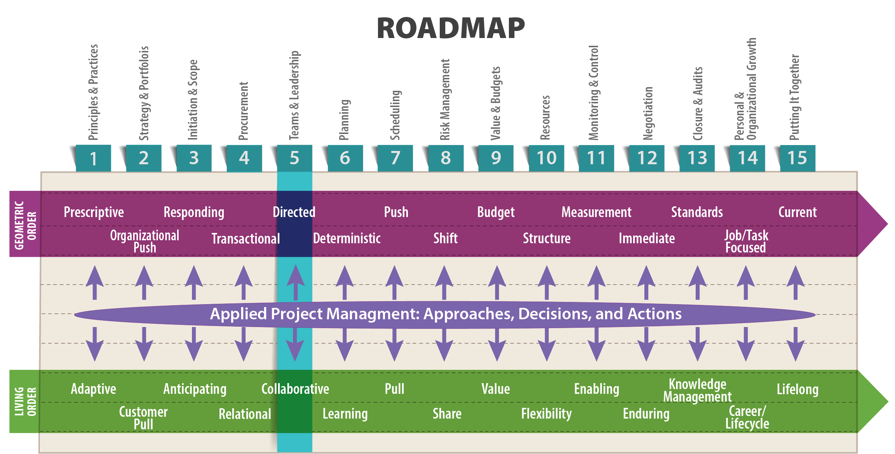
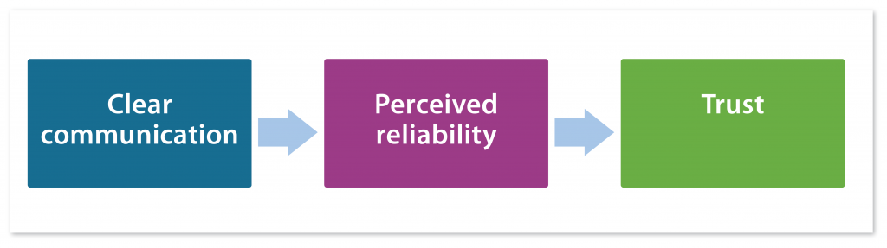

Leadership takes place in the living order. Management takes place in the geometric order.
—John Nelson, PE – Chief Technical Officer, Global Infrastructure Asset Management
Adjunct Professor, Civil & Environmental Engineering, University of Wisconsin-Madison

Objectives
After reading this lesson, you will be able to
The Big Ideas in this Lesson
According to Jon. R. Katzenbach and Douglas K. Smith, authors of the Wisdom of Teams: Creating the High-Performance Organization, a team is a “small number of people with complementary skills who are committed to a common purpose, performance goals, and approach for which they hold themselves mutually accountable” (1993, 45).
Of course, this describes an ideal team. A real team might be quite different. You have probably suffered the pain of working on a team lacking in complementary skills, with no clear common purpose, and plagued by uncommitted members who refuse to hold themselves accountable. However, as a project manager, you need to work with the team you have, not with the team you wish you had, leading your group through the uncertainty inherent in a living order project, and encouraging collaboration at every turn.
The most powerful sources of uncertainty in any project are the people charged with carrying it out. What’s more, because a project is, by definition, a temporary endeavor, the team that completes it is usually temporary as well, and often must come together very quickly. These facts can exacerbate leadership challenges that are not an issue in more stable situations. Some organizations maintain standing teams that tackle a variety of projects as they arise. But even in those cases, individual team members come and go. These minor changes in personnel can hugely affect the team’s overall cohesion and effectiveness.
How can you make your team as effective as possible? For starters, it helps to feel good about being on a team in the first place. According to Katzenbach and Smith, most people either undervalue the power of teams or actually dislike them. They point to three sources for this skepticism about teams: “a lack of conviction that a team or teams can work better than other alternatives; personal styles, capabilities, and preferences that make teams risky or uncomfortable; and weak organizational performance ethics that discourage the conditions in which teams flourish” (1993, 14). But research shows that highly functioning teams are far more than the sum of their individual members:
First, they bring together complementary skills and experiences that, by definition, exceed those of any individual on the team. This broader mix of skills and know-how enables teams to respond to multifaceted challenges like innovation, quality, and customer service. Second, in jointly developing clear goals and approaches, teams establish communications that support real-time problem solving and initiative. Teams are flexible and responsive to changing event and demands…. Third, teams provide a unique social dimension that enhances the economic and administrative aspects of work…. Both the meaning of work and the effort brought to bear upon it deepen, until team performance eventually becomes its own reward. Finally, teams have more fun. This is not a trivial point because the kind of fun they have is integral to their performance. (1993, 12)
Viewed through the lens of living order, perhaps the most important thing about teams is the way they, by their very nature, encourage members to adapt to changing circumstances:
Because of their collective commitment, teams are not as threatened by change as are individuals left to fend for themselves. And, because of their flexibility and willingness to enlarge their solution space, teams offer people more room for growth and change than do groups with more narrowly defined task assignments associated with hierarchical job assignments. (1993, 13)
Joining a team—that is, fully committing yourself to a group of people with a shared goal—is always a risk. But risk can bring rewards for those willing to take a chance. Jon R. Katzenbach and Douglas K. Smith, explain that, in their studies of scores of teams, they discovered
an underlying pattern: real teams do not emerge unless the individuals on them take risks involving conflict, trust, interdependence, and hard work. Of the risks required, the most formidable involve building the trust and interdependence necessary to move from individual accountability to mutual accountability. People on real teams must trust and depend on one another— not totally or forever— but certainly with respect to the team’s purpose, performance goals, and approach. For most of us such trust and interdependence do not come easily; it must be earned and demonstrated repeatedly if it is to change behavior. (Katzenbach and Smith 1993)
Years of psychological research has demonstrated the importance of trust in building effective teams (Breuer, Hüffmeier and Hertel 2016). Because teams often need to come together in a hurry, building trust quickly among members is essential. A team of strangers who are brought together to complete a task in three months can’t draw on the wellspring of interpersonal knowledge and loyalty that might exist among people who have worked side-by-side for years. So as a team leader, you need to focus on establishing trusting relationships at the outset. Your ultimate goal is to encourage an overall sense of psychological safety, which is “a shared belief held by members of a team that the team is safe for interpersonal risk taking.” Teams that do their work under the umbrella of psychological safety are more effective, in part because they are willing to take the risks required to learn and innovate (Edmondson 1999).
Let’s look at a few important traits, techniques, and behaviors that can help you build trust and a sense of psychological safety.
As Laufer et al. explain in their book Becoming a Project Leader, “When it comes to projects, one thing is very clear: ‘right’ does not mean ‘stars.’ Indeed, one of the primary reasons for project ‘dream teams’ to fail is ‘signing too many all-stars.’” More important than an all-star is a project team member fully committed to the project goals. Chuck Athas was one such team member. He worked for Frank Snow, the Ground System and Flight Operations Manager at NASA’s Goddard Space Flight Center. Officially listed as the project scheduler and planner, Chuck was eager to help Frank once the schedule was completed and needed less attention. “Anything that needed to be done, and he didn’t care what it was, he would attack with the same gusto and unflappable drive to succeed,” says Frank. “Whatever it took to get the job done, Chuck would do. Was there anything he couldn’t make happen? Probably something. But with Chuck on the team I felt like I could ask for Cleveland, and the next day he would show up with the deed” (Snow 2003). Chuck demonstrated a lack of ego that most all-stars don’t have. His can-do attitude is the antidote to the not-my-job thinking that can sometimes cause team cohesiveness and project completion to falter. His adherence to the project goals over his own goals made him an ideal team member (Laufer, et al. 2018).
Nothing erodes trust like a broken promise. We all know this. As Michelle Gielan explains in a blog post for Psychology Today:
When we don’t keep a promise to someone, it communicates to that person that we don’t value him or her. We have chosen to put something else ahead of our commitment. Even when we break small promises, others learn that they cannot count on us. Tiny fissures develop in our relationships marked by broken promises. (2010)
Unfortunately, in fast-moving, highly technical projects, breaking ordinary, everyday promises is inevitable. In living order, it’s just not possible to foresee every eventuality, so the task at the top of today’s To Do list, the one you promised to complete before lunch, might get swept aside in the flood of new tasks associated with a sudden crisis.
That’s why it’s important to distinguish between an ordinary promise, and a reliable promise. In Lean terminology, a reliable promise is an official commitment to complete a task by an agreed-upon time. In order to make a reliable promise, you need to have:
Not every situation calls for an official, reliable promise. John Nelson estimates that, on most projects, no more than 10 to 20 percent of promises are so important that they require a reliable promise (2019). As Hal Macomber explains in a white paper for Lean Project Consulting, you should save reliable promises for tasks that must be completed so that other work can proceed. And keep in mind that you’ll get the best results from reliable promises if they are made in a group setting, where other teammates can chime in with ideas on how to complete the task efficiently or suggest alternatives to the proposed task. Finally, remember that people tend to feel a more positive sense of commitment to a promise if they understand that they have the freedom to say no:
A sincere “no” is usually better than a half-hearted “ok.” You know exactly what to do with the no—ask someone else. What do you do with a half-hearted “ok?” You can worry, or investigate, or not have time to investigate and then worry about that. Make it your practice to remove fear from promising conversations. (2010)
The practice of reliable promising was developed as a way to keep Lean projects unfolding efficiently in unpredictable environments. Ultimately, reliable promises are an expression of respect for people, which, as discussed in Lesson 1, is one of the six main principles of Lean. They encourage collaboration and help build relationships among team members. In Agile, the commitments made in every Scrum are another version of reliable promises. And the sincere commitment offered by a reliable promise can be useful in any kind of project. Here are some examples of situations in which reliable promising could be effective:
As a manager of technical projects, you might be inclined to think that, as long as you have the technical details under control, you have the whole project under control. But if you do any reading at all in the extensive literature on leadership, you’ll find that one characteristic is crucial to building trusting relationships with other people: emotional intelligence, or the ability to recognize your own feelings and the feelings of others.
High emotional intelligence is the hallmark of a mature, responsible, trustworthy person. In fact, a great deal of new research suggests that skills associated with emotional intelligence—“attributes like self-restraint, persistence, and self-awareness—might actually be better predictors of a person’s life trajectory than standard academic measures” (Kahn 2013). An article in the Financial Post discusses numerous studies that have tied high emotional intelligence to success at work:
A recent study, published in the Journal of Organizational Behavior, by Ernest O’Boyle Jr. at Virginia Commonwealth University, concludes that emotional intelligence is the strongest predictor of job performance. Numerous other studies have shown that high emotional intelligence boosts career success. For example, the U.S. Air Force found that the most successful recruiters scored significantly higher on the emotional intelligence competencies of empathy and self-awareness. An analysis of more than 300 top level executives from 15 global companies showed that six emotional competencies distinguished the stars from the average. In a large beverage firm, using standard methods to hire division presidents, 50% left within two years, mostly because of poor performance. When the firms started selecting based on emotional competencies, only 6% left and they performed in the top third of executive ranks. Research by the Center for Creative Leadership has found the primary cause of executive derailment involves deficits in emotional competence. (Williams 2014)
According to Daniel Goleman, author of the influential book Emotional Intelligence: Why It Can Matter More Than IQ, it’s well established that “people who are emotionally adept—who know and manage their own feelings well, and who read and deal effectively with other people’s feelings—are at an advantage in any domain of life, whether romance and intimate relationships or picking up the unspoken rules that govern success in organizational politics” (1995, 36). In all areas of life, he argues, low emotional intelligence increases the chance that you will make decisions that you think are rational, but that are in fact irrational, because they are based on unrecognized emotion. And nothing erodes trust like a leader who imposes irrational decisions on a team.
Some people are born with high emotional intelligence. Others can cultivate it by developing qualities and skills associated with emotional intelligence, such as self-awareness, self-control, self-motivation, and relationship skills. Of course, it’s no surprise that these are also useful for anyone working on a team. Treating others the way they want to want to be treated—not how you want to be treated—is a sign of a mature leader, and something that is only possible for people who have cultivated the emotional intelligence required to understand what other people want.
The following resources offer more information about emotional intelligence:
You might have had experience with an overly negative project manager who derailed a project with constant predictions of doom and gloom. But in fact, the more common enemy of project success is too much positivity, in which natural human optimism blinds team members to reality. That’s a sure-fire way to destroy painstakingly built bridges of trust between team members. In her book Bright-Sided: How Positive Thinking is Undermining America, social critic Barbara Ehrenrich explains the downside of excessive optimism, which, she argues, is a special failing of American businesses (2009). The optimist clings to the belief that everything will turn out fine, even when the facts indicate otherwise, and so fails to prepare for reality. The optimist also has a tendency to blame the victims of unfortunate events: “If only they’d had a more positive attitude in the first place, nothing bad would have happened.”
In the planning phase, an overly optimistic project manager can make it difficult for team members to voice their realistic concerns. In a widely cited article in the Harvard Business Review, psychologist Gary Klein argues that projects fail at a “spectacular rate,” in part because “too many people are reluctant to speak up about their reservations during the all-important planning phase.” To counteract this effect, Klein pioneered the idea of a troubleshooting session—which he calls a premortem—early on in a project in which people who understand the project but are concerned about its potential for failure feel free to express their thoughts. This widely used technique encourages stakeholders to look to the future and analyze the completed project as if it were already known to be a total failure:
A premortem is the imaginary converse of an autopsy; the hindsight this intelligence assessment offers is prospective. In sum, tasking a team to imagine that its plan has already been implemented and failed miserably increases the ability of its members to correctly identify reasons for negative future outcomes. This is because taking a team out of the context of defending its plan and shielding it from flaws opens new perspectives from which the team can actively search for faults. Despite its original high level of confidence, a team can then candidly identify multiple explanations for failure, possibilities that were not mentioned let alone considered when the team initially proposed then developed the plan. The expected outcomes of such stress-testing are increased appreciation of the uncertainties inherent in any projection of the future and identification of markers that, if incorporated in the team’s design and monitoring framework and subsequently tracked, would give early warning that progress is not being achieved as expected. (Serrat 2012)
Reliable promises, emotional intelligence, and a realistic outlook are all meaningless as trust-building tools if you don’t have the skills to communicate with your team members. In his book Mastering the Leadership Role in Project Management, Alexander Laufer explains the vital importance of team communication:
Because a project functions as an ad hoc temporary and evolving organization, composed of people affiliated with different organizations, communication serves as the glue that binds together all parts of the organization. When the project suffers from high uncertainty, the role played by project communication is even more crucial. (2012, 230)
Unfortunately, many people think they are better communicators than they actually are. Sometimes a person will excel at one form of communication but fail at others. For instance, someone might be great at small talk before a meeting but continually confuse co-workers with poorly written emails.
This is one area where getting feedback from your co-workers can be especially helpful. Another option is taking a class, or at the very least, consulting the numerous online guides to developing effective communication skills. To help you get started, here are a few quick resources for improving vital communication skills:
Telling stories is an especially helpful way to share experiences with your team. Indeed, stories are “a form of communication that has been used to entertain, persuade, inspire, impart wisdom, and teach for thousands of years. This wide range of uses is due to a story’s remarkable effect on human emotion, experience, and cognition” (Kerby, DeKorver and Cantor 2018).
You’ve probably experienced the way people lower their defenses when they realize they are hearing a tale about specific characters, with an uncertain outcome, rather than a simple recitation of events, or worse, a lecture. Master storytellers seem to do it effortlessly, but in fact they usually shape their stories around the same basic template. Holly Walter Kerby, executive director of Fusion Science Theater, and a long-time science educator, describes the essential story elements as follows:
Keep in mind that in some high-stakes situations, the last thing you want is more tension. In that case, you want the opposite of a story—a straightforward recitation of the facts. For example, when confronting a team member about poor work habits, or negotiating with an unhappy client, it’s best to keep everything simple. Draining the drama from a situation helps everyone stay focused on the facts, keeping resentment and other negative emotions to a minimum (Manning 2018, 64). For more on good techniques for difficult conversations, see Trevor Manning’s book Help! I need to Master Critical Conversations.
[1] Thanks to Hala Nassereddine for sharing her story of her experience as an intern on a construction site in Beirut, Lebanon.
As Laufer et al. point out in their book Becoming a Project Leader, “In contrast to interactions through other media that are largely sequential, face-to-face interaction makes it possible for two people to send and receive messages almost simultaneously. Furthermore, the structure of face-to-face interaction offers a valuable opportunity for interruption, repair, feedback, and learning that is virtually instantaneous. By seeing how others are responding to a verbal message even before it is complete, the speaker can alter it midstream in order to clarify it. The immediate feedback in face-to-face communication allows understanding to be checked, and interpretation to be corrected. Additionally, face-to-face communication captures the full spectrum of human interaction, allowing multiple cues to be observed simultaneously. It covers all the senses—sight, hearing, smell, taste, and touch—that provide the channels through which individuals receive information” (2018).
Certainly, in today’s world of project management, in which distributed digital teams are becoming common practice, it may be impossible to sit down in the same room with all team members. But as much as possible, project managers should push for using technology that allows a fuller communication environment—one in which interactions are not just isolated to text. For more, see “The Place of Face-to-Face Communication in Distributed Work” by Bonnie A. Nardi and Steve Whittaker.”
To build believable performances, actors start by figuring out their characters’ motivations—their reasons for doing what they do. As a team leader, you can use the same line of thinking to better understand your team members. Start by asking this question: Why do your team members do what they do? Most people work because they have to, of course. But their contributions to a team are motivated by issues that go way beyond the economic pressures of holding onto a job.
In their book The Progress Principle: Using Small Wins to Ignite Joy, Engagement, and Creativity at Work, Teresa Amabile and Steven Kramer argue that the most important motivator for any team is making meaningful daily progress toward an important goal. In their study of 12,000 daily journal entries from team members in a variety of organizations and industries, they found that a sense of accomplishment does more to encourage teamwork, on-the-job happiness, and creativity than anything else. “Even when progress happens in small steps,” the researchers explain, “a person’s sense of steady forward movement toward an important goal can make all the difference between a great day and a terrible one” (2011, 77).
According to Amabile and Kramer, the best managers focus on facilitating progress by removing roadblocks and freeing people up to focus on work that matters:
When you do what it takes to facilitate progress in work people care about, managing them—and managing the organization—becomes much more straightforward. You don’t need to parse people’s psyches or tinker with their incentives, because helping them succeed at making a difference virtually guarantees good inner work life and strong performance. It’s more cost-effective than relying on massive incentives, too. When you don’t manage for progress, no amount of emotional intelligence or incentive planning will save the day (2011, 10).
As you might expect, setbacks on a project can have the opposite effect, draining ambition and creativity from a team that, only days before, was charging full steam ahead toward its goal. But setbacks can be counterbalanced by even small wins—“seemingly minor progress events”—which have a surprising power to lift a team’s spirits, making them eager to get back to work the next day (2011, 80). You’ve probably experienced the pleasure that comes from checking at least one task off your to-do list. Even completing a small task can generate a sense of forward momentum that can propel a team toward larger achievements.
Amabile and Kramer’s book is a great resource for team managers looking to improve their motivational abilities. If you don’t have time to read the whole book, they summarize their research and advice in this Harvard Business Review article: The Power of “The Power of Small Wins.”
Through years of practical experience as an executive, consultant, project engineer, and project manager, John Nelson has gained a finely honed understanding of how to manage teams. According to Nelson, the following are essential for motivators for any team:
Nelson also recommends avoiding the following demotivators, which can sap the life out of any team:
In his book, Drive, Daniel Pink digs into the question of how to have a meaningful, purpose-driven work life. For a quick summary of his often surprising ideas, see this delightful, eleven-minute animated lecture: “Autonomy, Mastery, Purpose: The Science of What Motivates Us, Animated.” Among other things, Pink explains that cash rewards aren’t always the motivators we think they are. For simple, straight-forward tasks, a large reward does indeed encourage better performance. But for anything involving conceptual, creative thinking, rewards have the opposite effect: the higher the reward, the poorer the performance. This has been replicated time and time again by researchers in the fields of psychology, economics, and sociology. It turns out the best way to nurture engaged team members is to create an environment that allows for autonomy, mastery, and a sense of purpose (Pink 2009).
One form of motivation—uncontrolled external influences—can have positive or negative effects. For example, in 2017, Hurricanes Harvey and Irma inflicted enormous damage in Texas and Florida. That had the effect of energizing people to jump in and help out, creating a nationwide sense of urgency. By contrast, the catastrophic damage inflicted on Puerto Rico by Hurricane Maria, and the U.S. government’s slow response, generated a sense of outrage and despair. One possible reason for this difference is that, on the mainland, people could take action on their own, arriving in Florida or Texas by boat or car. Those successes encouraged other people to join the effort, creating a snowball effect. But the geographic isolation of Puerto Rico, and the complete failure of the power grid, made it impossible for the average person to just show up and help out. That, in turn, contributed to the overall sense of hopelessness.
This suggests that small successes in the face of uncontrolled external influences can encourage people to band together and work even harder as a team. But when even small signs of success prove elusive, uncontrolled external influences can be overwhelming.
As a technical team leader, you can help inoculate your team against the frustration of external influences by making it clear that you expect the unexpected. Condition your team to be prepared for external influences at some point throughout the project. For example, let your team know if you suspect that your project could possibly be terminated in response to changes in the market. By being upfront about the possibilities, you help defuse the kind of worried whispering that can go on in the background, as team members seek information about the things they fear.
If you’re working in the public domain, you’ll inevitably have to respond to influences that might seem pointless or downright silly—long forms that must be filled out in triplicate, unhelpful training sessions, and so on. Take the time to prepare your team for these kinds of things, so they don’t become demotivated by them.
High performing teams develop a rhythm. They have a way of working together that’s hard to quantify and that is more than just a series of carefully implemented techniques. Once you have the pleasure of working on a team like that, you’ll begin to recognize this rhythm in action and you’ll learn to value it. Unfortunately, you might also experience the disequilibrium that results from a change in personnel.
Endless books and articles have been written on the topic of change management, with a focus on helping people deal with new roles and personalities. Your Human Resources department probably has many resources to recommend. Really, the whole discipline comes down to, as you might expect with all forms of team management, good communication and sincere efforts to build trust among team members. Here are a few resources with practical tips on dealing with issues related to team transitions:
Agile software development was founded as a way to help team members work together more efficiently and companionably. In fact, three of the twelve founding principles of the methodology focus on building better teams:
The term “self-organizing teams” is especially important to Agile. Nitin Mittal, writing for Scrum Alliance, describes a self-organizing team as a “group of motivated individuals, who work together toward a goal, have the ability and authority to take decisions, and readily adapt to changing demands” (2013).
But that doesn’t mean Agile teams have no leaders. On the contrary, the Agile development process relies on the team leader (known as the ScrumMaster in Scrum) to guide the team, ideally by achieving “a subtle balance between command and influence” (Cohn 2010). Sometimes that means moving problematic team members to new roles, where they can be more effective, or possibly adding a new team member who has the right personality to interact with the problematic team member. In a blog for Mountain Goat Software, Mike Cohn puts it like this:
There is more to leading a self-organizing team than buying pizza and getting out of the way. Leaders influence teams in subtle and indirect ways. It is impossible for a leader to accurately predict how a team will respond to a change, whether that change is a different team composition, new standards of performance, a vicarious selection system, or so on. Leaders do not have all the answers. What they do have is the ability to agitate teams (and the organization itself) toward becoming more agile. (2010)
The rationale for putting together a team is to combine different people, personalities, and perspectives to solve a problem. Difference is the whole point. Diverse teams are more effective than homogenous teams because they are better at processing information and using it to come up with new ideas. According to David Rock and Heidi Grant, diverse teams tend to focus more on facts, process those facts more carefully, and are more innovative (2016). What’s more, researchers investigating creativity and innovation have consistently demonstrated “the value of exposing individuals to experiences with multiple perspectives and worldviews. It is the combination of these various perspectives in novel ways that results in new ideas ‘popping up.’ Creative ‘aha’ moments do not happen by themselves” (Viki 2016). In his book: The Difference: How the Power of Diversity Creates Better Groups, Firms, Schools, and Societies, Scott Page puts it like this:
As individuals we can accomplish only so much. We’re limited in our abilities. Our heads contain only so many neurons and axons. Collectively, we face no such constraint. We possess incredible capacity to think differently. These differences can provide the seeds of innovation, progress, and understanding. (2007, xxx)
Despite these widely documented advantages of diverse teams, people often approach a diverse team with trepidation. Indeed, bridging differences can be a challenge, especially if some team members feel threatened by ideas and perspectives that feel foreign to them. But diversity can result in conflict, even when everyone on the team only wants the best for others. This is especially true on teams made up of people from different countries. Such teams are vulnerable to cultural misunderstandings that can transform minor differences of opinion into major conflicts. Cultural differences can also make it hard for team members to trust each other, because different cultures have different ways of demonstrating respect and trust.
In her book The Culture Map: Breaking Through the Invisible Boundaries of Global Business, Erin Meyer describes negotiations between people from two companies, one American and one Brazilian. The first round of negotiations took place in Jacksonville, Mississippi, with the American hosts taking care stick to the agenda, so as to avoid wasting any time:
At the end of the two days, the American team felt great about all they had accomplished. The discussions, they believed, were efficient and productive. The short lunches and tight scheduling signified respect for the time the Brazilians invested in preparing for the negotiations and traveling to an out-of-the-way location. The Brazilians, on the other hand, were less upbeat and felt the meetings had not gone as well as hoped. (2014, 164)
As it turned out, the Brazilians felt that the efficient, organized American approach left them no time to get to know their potential new business partners. During the next round of negotiations, in Brazil, the South American hosts left time for long lunches and dinners that “stretched into the late evening,” lots of good food and conversation. But this “socializing marathon” made the Americans uncomfortable because they thought the Brazilians weren’t taking the negotiations seriously. In fact the opposite was true—the Brazilians were attempting to show respect for the Americans by attempting to get to know them so as to develop “personal connection and trust” (2014, 163-165).
When they go unrecognized, cross-cultural misunderstandings like this can cause a host of ill-feelings. The first step toward preventing these misunderstandings is self-knowledge. What are your cultural biases, and how do they affect what you expect of other people? To find out, take this helpful quiz based on Erin Meyer’s research on cross-cultural literary: “What’s Your Cultural Profile?”
When thinking about culture, keep in mind that different generations have different cultures, too. Behavior that might feel perfectly acceptable to a twenty-four-year-old (texting during a meeting, wearing casual clothes to work) are often frowned on by older workers. Like cross-cultural differences, generational traits can cause unexpected conflicts on a team. This can be exacerbated if older team members feel threatened by younger workers, perhaps because younger workers are better at mastering new technology. Meanwhile, because of their lack of experience, younger workers might lack the ability to synthesize new information about a project. Your attempts to manage a multi-generational team can really go off the rails if you make the mistake of confusing “character issues like immaturity, laziness, or intractability with generational traits” (Wall Street Journal n.d.). This helpful guide suggests some ways to bridge the generation gap: “How to Manage Different Generations.”
Teams also have their own cultures, and sometimes you’ll have to navigate widely-diverging cultures on multiple teams. Take the time to get to know your team’s set of norms and expectations, especially if you’re joining a well-established group. After a little bit of observation, you might conclude that your team’s culture is preventing it from achieving its goals, in which case, if you happen to be the team leader, you’ll need to lead the team in a new direction.
Even among people from similar backgrounds, differences in personality can invigorate a team, injecting fresh perspectives and new ideas. A team of diverse personality types can be a challenge to manage, but such a team generates richer input on the project’s progress, increasing the odds of project success. For more on teams with diverse personalities, see this article from the American Society of Mechanical Engineers: “More Diverse Personalities Mean More Successful Teams.” For tips on managing a truly toxic individual, see this Harvard Business Review article: “How To Manage a Toxic Employee.”
Managing a team of people who work side-by-side in the same office is difficult enough. But what about managing a virtual team—that is, a team whose members are dispersed at multiple geographical locations? In the worldwide marketplace, such teams are essential. Deborah L. Duarte and Nancy Tennant Snyder explain the trend in their helpful workbook, Mastering Virtual Teams:
Understanding how to work in or lead a virtual team is now a fundamental requirement for people in many organizations…. The fact is that leading a virtual team is not like leading a traditional team. People who lead and work on virtual teams need to have special skills, including an understanding of human dynamics and performance without the benefit of normal social cues, knowledge of how to manage across functional areas and national cultures, skill in managing their careers and others without the benefit of face-to-face interactions, and the ability to use leverage and electronic communication technology as their primary means of communicating and collaborating. (Duarte and Tennant Snyder 2006, 4)
When properly managed, collaboration over large distances can generate serious advantages. For one thing, the diversity of team members “exposes members to heterogeneous sources of work experience, feedback, and networking opportunities.” At the same time, the team’s diversity enhances the “overall problem-solving capacity of the group by bringing more vantage points to bear on a particular project” (Siebdrat, Hoegel and Ernst 2009, 65). Often, engaging with stakeholders via email allows for more intimacy and understanding than face-to-face conversations, which, depending on the personality types involved, can sometimes be awkward or ineffective.
However, research consistently underscores the difficulties in getting a dispersed team to work effectively. In a widely cited study of 70 virtual teams, Vijay Govindarajan and Anil K. Gupta found that “only 18% considered their performance ‘highly successful’ and the remaining 82% fell short of their intended goals. In fact, fully one-third of the teams … rated their performance as largely unsuccessful” (2001). Furthermore, research has consistently shown that virtual team members are “overwhelmingly unsatisfied” with the technology available for virtual communication and do not view it “as an adequate substitute for face-to-face communication” (Purvanova 2014).
Given these challenges, what’s a virtual team manager to do? It helps to be realistic about the barriers to collaboration that arise when your team is scattered around the office park or around the globe.
Physical distance—the actual space between team members—can impose all sorts of difficulties. According to Frank Siebdrat, Martin Hoegl, and Holger Ernst, most studies have shown that teams who are located in the same space, where members can build personal, collaborative relationships with one another, are usually more effective than teams that are dispersed across multiple geographical locations.
Potential issues include difficulties in communication and coordination, reduced trust, and an increased inability to establish a common ground…. Distance also brings with it other issues, such as team members having to negotiate multiple time zones and requiring them to reorganize their work days to accommodate others’ schedules. In such situations, frustration and confusion can ensue, especially if coworkers are regularly unavailable for discussion or clarification of task-related issues. (Siebdrat, Hoegel and Ernst 2009, 64)
Even dispersing teams on multiple floors of the same building can decrease the team’s overall effectiveness, in part because team members “underestimate the barriers to collaboration deriving from, for instance, having to climb a flight of stairs to meet a teammate face-to-face.” Team members end up behaving as if they were scattered across the globe. As one team leader at a software company noted, teams spread out within the same building tend to “use electronic communication technologies such as e-mail, telephone, and voicemail just as much as globally dispersed teams do” (Siebdrat, Hoegel and Ernst 2009, 64).
Communication options like video conferences, text messages, and email can do wonders to bridge the gap. But you do need to make sure your communication technology is working seamlessly. Studies show that operational glitches (such as failed Skype connections or thoughtlessly worded emails) can contribute to a pernicious sense of distance between team members. Karen Sobel-Lojeski and Richard Reilly coined the term virtual distance to refer to the “psychological distance created between people by an over-reliance on electronic communications” (2008, xxii). Generally speaking, it is tough to build a team solely through electronic communication. That’s why it’s helpful to meet face-to-face occasionally. A visit from a project manager once a year or once a quarter can do wonders to nurture relationships among all team members and keep everyone engaged and focused on project success.
In their book Uniting the Virtual Workforce, Sobel-Lojeski and Reilly document some “staggering effects” of virtual distance:
So what’s the secret to making virtual teams work for you? We’ve already discussed the importance of building trust on any team. But on virtual teams, building trust is a special concern. Erin Meyer describes the situation like this: “Trust takes on a whole new meaning in virtual teams. When you meet your workmates by the water cooler or photocopier every day, you know instinctively who you can and cannot trust. In a geographically distributed team, trust is measured almost exclusively in terms of reliability” (Meyer 2010).
All sorts of problems can erode a sense of reliability on a virtual team, but most of them come down to a failure to communicate. Sometimes the problem is an actual, technical inability to communicate (for example, because of unreliable cell phone service at a remote factory); sometimes the problem is related to scheduling (for example, a manager in Japan being forced to hold phone meetings at midnight with colleagues in North America); and sometimes the problem is simply a failure to understand a message once it is received. Whatever the cause, communication failures have a way of eroding trust among team members as they begin to see each other as unreliable.
And as illustrated in Figure 5-1, communicating clearly will lead your team members to perceive you as a reliable person, which will then encourage them to trust you.

Leigh Thompson, a professor at Northwestern University’s Kellogg School of Management, offers a number of practical suggestions for improving virtual team work, including the following:
Here are a few other resources on virtual teams. You’ll notice that they all emphasize good communication and building trust among team members:
Good teamwork depends, ultimately, on a leader with a clear understanding of what it means to lead. To judge by the countless books on the topic, you’d think the essential nature of leadership was widely understood. However, few people really understand the meaning of “leadership.”
In his book, Leadership Theory: Cultivating Critical Perspectives, John P. Dugan examines “core considerations of leadership,” zeroing in on misunderstood terms and also false dichotomies that are nevertheless widely accepted as accurate explanations of the nature of leadership. Dugan argues that a confused understanding of these essential ideas makes becoming a leader seem like a far-off dream, which only a select few can attain (Dugan 2017). But in fact, he argues, anyone can learn how to be a better leader.
Here’s what Dugan has to say about core considerations of leadership:
Traditionally, engineers tended to be rewarded primarily for their analytical skills and their ability to work single-mindedly to complete a task according to a fixed plan. But in the modern world, plans are rarely fixed, and a single-minded focus blinds you to the ever-changing currents of living order. This is especially true when multiple people come together as a team to work on a project.
The old, geometric order presumes the continuation of the status quo, with humans working in a strict hierarchy, directed from above, performing their prescribed tasks like ants storing food for winter. By contrast, living order unfolds amidst change, risk-taking, collaboration, and innovation. This is like an ant colony after a gardener turns on a hose, washing away carefully constructed pathways and cached supplies with a cold gush of water, transforming order into chaos, after which the ants immediately adapt, and get to work rebuilding their colony. In such an unpredictable environment, the truly effective project manager is one who can adapt, learn, and perceive a kind of order—living order—in the chaos. At the same time, the truly effective project leader knows how to create and lead a team that is adaptable and eager to learn.
Virtual teams need to concentrate on creating a highly defined process where team members deliver specific results in a repeated sequence. Reliability, aka trust, is thus firmly established after two or three cycles. Because of that, face-to face meetings can be limited to once a year or so. (Meyer 2010)
While teams are hard to create, they are also hard to fix when they don’t function properly. So how does one mend a broken team? “You go back to your basics,” says Mueller. “Does the team have a clear goal? Are the right members assigned to the right task? Is the team task focused? We had a class on the ‘no-no’s of team building, and having vague, not clearly defined goals is a very, very clear no-no. Another no-no would be a leader who has difficulty taking the reins and structuring the process. Leadership in a group is very important. And third? The team goals cannot be arbitrary. The task has to be meaningful in order for people to feel good about doing it, to commit to the task. (Wharton School 2006)
Is there an optimal team size? Mueller has concluded … that it depends on the task. “If you have a group of janitors cleaning a stadium, there is no limit to that team; 30 will clean faster than five. But,” says Mueller, “if companies are dealing with coordination tasks and motivational issues, and you ask, ‘What is your team size and what is optimal?’ that correlates to a team of six” (2006).
With the right people, almost anything is possible. With the wrong team, failure awaits. Thus, recruiting should be taken seriously, and considerable time should be spent finding and attracting, and at times fighting for, the right people. Even greater attention may have to be paid to the selection of the right project manager. (2012, 222)
Amabile, Teresa, and Steven Kramer. 2011. The Progress Principle: Using Small Wins to Ignite Joy, Engagement, and Creativity at Work. Boston: Harvard Business Review Press.
Beedle, Mike, Arie van Bennekum, Alistair Cockburn, Ward Cunningham, Martin Fowler, Jim Highsmith, Andrew Hunt, et al. 2001. “Principles behind the Agile Manifesto.” Agile Manifesto. Accessed July 1, 2018. http://agilemanifesto.org/iso/en/principles.html.
Breuer, Christina, Joachim Hüffmeier, and Guido Hertel. 2016. “Does Trust Matter More in Virtual Teams? A Meta-Analysis of Trust and Team Effectiveness Considering Virtuality and Documentation as Moderators.” Journal of Applied Psychology 101 (8): 1151-1177. doi:http://dx.doi.org/10.1037/apl0000113.
Cohn, Mike. 2010. “The Role of Leaders on a Self-Organizing Team.” Mountain Goat Software. January 7. https://www.mountaingoatsoftware.com/blog/the-role-of-leaders-on-a-self-organizing-team.
Duarte, Deborah L., and Nancy Tennant Snyder. 2006. Mastering Virtual Teams: Strategies, Tools, and Techniques that Succeed. San Francisco: Josey-Bass, A Wiley Imprint.
Dugan, John P. 2017. Leadership Theory: Cultivating Critical Perspectives. San Francisco, CA: Jossey-Bass.
Edmondson, Amy. 1999. “Psychological Safety and Learning Behavior in Work Teams.” Administrative Science Quarterly 44 (2): 350-383. http://www.jstor.org/stable/2666999.
Ehrenreich, Barbara. 2009. Bright-Sided. New York: Henry Holt and Company, LLC.
Gielan, Michelle. 2010. “Why Keeping Your Promise is Good for You.” Psychology Today. https://www.psychologytoday.com/blog/lights-camera-happiness/201005/why-keeping-your-promise-is-good-you.
Goleman, Daniel. 1995. Emotional Intelligence: Why It Can Matter More Than IQ. New York: Random House.
Govindarajan, Vijay, and Anil K. Gupta. 2001. “Building an EFfective Global Business Team.” MIT Sloan Management Review. http://sloanreview.mit.edu/article/building-an-effective-global-business-team/.
Hunt, Vivian, Dennis Layton, and Sara Prince. 2015. “Why Diversity Matters.” McKinsey.com. January. https://www.mckinsey.com/business-functions/organization/our-insights/why-diversity-matters.
Kahn, Jennifer. 2013. “Can Emotional Intelligence Be Taught?” New York Times Magazine, September 11. http://www.nytimes.com/2013/09/15/magazine/can-emotional-intelligence-be-taught.html?pagewanted=all.
Katzenbach, Jon R., and Douglas K. Smith. 1993. Wisdom of Teams. New York: McKinsey & Company.
Kerby, Holly Walter, K. Brittland DeKorver, and Joanne Cantor. 2018. “Fusion Story Form: a novel, hybrid form of story.” International Journal of Science Education, September 1: 1774-1794.
Laufer, Alexander. 2012. Mastering the Leadership Role in Project Management: Practices that Deliver Remarkable Results. Upper Saddle River: FT Press.
Laufer, Alexander, Terry Little, Jeffrey Russell, and Bruce Maas. 2018. Becoming a Project Leader: Blending Planning, Agility, Resilience, and Collaboration to Deliver Successful Projects. New York: Palgrave Macmillan.
Lojeski, Karen Sobel, and Richard R. Reilly. 2008. Uniting the Virtual Workforce: Transforming Leadership and Innovation in the Globally Integrated Enterprise. Hoboken: John Wiley & Sons, Inc.
Macomber, Hal. 2010. “Securing Reliable Promises on Projects: A Guide to Developing a New Practice.” LeanProject. https://www.leanproject.com/wp-content/uploads/Securing-Reliable-Promises-on-Projects-v-3.11.pdf.
Manning, Trevor. 2018. Help! I need to Master Critical Conversations. Trevor Manning Consultancy Pty Ltd.
Meyer, Erin. 2010. “The Four Keys To Success With Virtual Teams.” Forbes, August 19. http://www.forbes.com/2010/08/19/virtual-teams-meetings-leadership-managing-cooperation.html.
—. 2014. The Culture Map: Breaking Through the Invisible Boundaries of Global Business. New York: Public Affairs.
Mind Tools. n.d. “Bridges’ Transition Model: Guiding People Through Change.” MindTools. Accessed July 1, 2018. https://www.mindtools.com/pages/article/bridges-transition-model.htm.
Mittal, Nitin. 2013. “Self-Organizing Teams: What and How.” Scrum Alliance. January 7. https://scrumalliance.org/community/articles/2013/january/self-organizing-teams-what-and-how.
Nelson, John. 2017. “Lecture on reliable promising for EPD612: Technical Project Management, University of Wisconsin-Madison .” October 4.
—. 2017. “Motivators and Demotivators for Teams.” Lecture for EPD612: Technical Project Management, University of Wisconsin-Madison. October 4.
Neyfakh, Leaon. 2012. “How to change a culture.” Boston Globe, September 23. https://www.bostonglobe.com/ideas/2012/09/22/how-change-culture/HitMpC95xPFidEjEl2cx9J/story.html.
Page, Scott E. 2007. The Difference: How the Power of Diversity Creates Better Groups, Firms, Schools, and Societies. Princeton, New Jersey: Princeton University Press.
Pink, Daniel H. 2009. Drive: The Surprising Truth About What Motivates Us. New York: Riverhead Books.
Purvanova, Radostina K. 2014. “Face-to-face versus virtual teams: What have we really learned?” The Psychologist-Manager Journal 17 (1): 2-29.
Rock, David, and Heidi Grant. 2016. “Why Diverse Teams are Smarter.” Harvard Business Review, November 4. https://hbr.org/2016/11/why-diverse-teams-are-smarter.
Serrat, Olivier. 2012. “The Premortem Technique.” DigitalComments@ILR. March. https://digitalcommons.ilr.cornell.edu/cgi/viewcontent.cgi?article=1218&context=intl.
Siebdrat, Frank, Martin Hoegel, and Holger Ernst. 2009. “How to Manage Virtual Teams.” MIT Sloan Management Review (Summer): 63-68.
Snow, Frank. 2003. “Give it to Chuck.” Ask Magazine, 12-13.
Thompson, Leigh. 2015. “Optimizing virtual teams.” Kellog School of Management. July 31. https://www.youtube.com/watch?v=0SzWrazgt7Y&feature=youtu.be.
Viki, Tendayi. 2016. “Why Diverse Teams Are More Creative.” Forbes, December 6. https://www.forbes.com/sites/tendayiviki/2016/12/06/why-diverse-teams-are-more-creative/#f27da2772628.
Wall Street Journal. n.d. “How to Manage Different Generations.” Wall Street Journal. Accessed July 1, 2018. http://guides.wsj.com/management/managing-your-people/how-to-manage-different-generations/.
Wharton School. 2006. “Is Your Team Too Big? Too Small? What’s the Right Number?” Knowledge @ Wharton. June 14. http://knowledge.wharton.upenn.edu/article/is-your-team-too-big-too-small-whats-the-right-number-2/.
Williams, Ray. 2014. “The Biggest Predictor of Career Success? Not Skills or Education—But Emotional Intelligence.” Financial Post, January 1. http://business.financialpost.com/executive/careers/the-biggest-predictor-of-career-success-not-skills-or-education-but-emotional-intelligence.